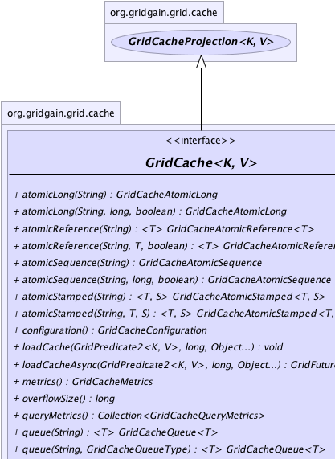
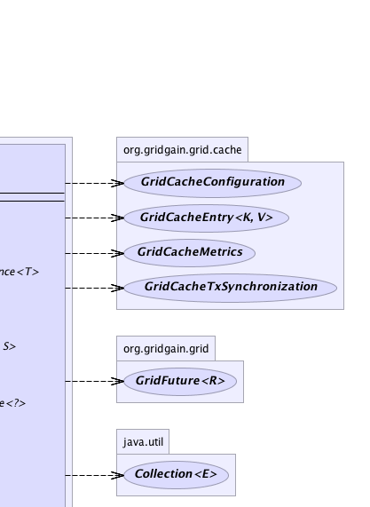
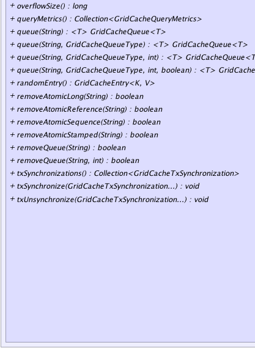
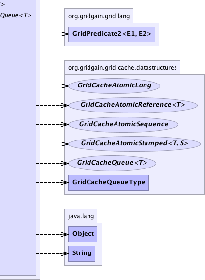

Start Here
Main Data Grid APIs.
Start Here
Main Data Grid APIs.
|
GridGain™ 3.1.1c
Community Edition |
|||||||||
| PREV CLASS NEXT CLASS | FRAMES NO FRAMES | |||||||||
| SUMMARY: NESTED | FIELD | CONSTR | METHOD | DETAIL: FIELD | CONSTR | METHOD | |||||||||
K - Cache key type.V - Cache value type.public interface GridCache<K,V>
Start Here
Main Data Grid APIs.
GridCacheProjection API which contains vast majority of cache functionality
and documentation. In addition to GridCacheProjection functionality this API provides:
'loadCache(..)' methods to load cache either synchronously or asynchronously.
These methods don't specify any keys to load, and leave it to the underlying storage to load cache
data based on the optionally passed in arguments.
'tx{Un}Synchronize(..)' witch allow to get notifications for transaction state changes.
This feature is very useful when integrating cache transactions with some other in-house transactions.
GridCache.metrics() to provide metrics for the whole cache.GridCache.configuration() to provide cache configuration bean.GridCache.randomEntry() to retrieve random entry from cache.GridCache.overflowSize() to get the size of the swap storage.GridCacheAtomicLong,
GridCacheAtomicReference, GridCacheAtomicStamped, and GridCacheAtomicSequence.
All instances of these structures must have unique names in cache regardless of their type.
null keys or values are allowed to be stored in cache. If a null value
happens to be in cache (e.g. after invalidation or remove), then cache will treat this case
as there is no value at all.
All API method with @Nullable annotation on method parameters
or return values either accept or may return a null value. Parameters that do not
have this annotation cannot be null and invoking method with a null parameter
in this case will result in NullPointerException.
GridDiscoverySpi
that are annotated with GridDiscoverySpiOrderSupport annotation.
User can also relax this annotation and can manually ensure that nodes are started sequentially (not concurrently).
To do that, GridSystemProperties.GG_NO_DISCO_ORDER must be provided at startup.
| Wiki | |
| Forum |
|  |  |
|  |  |
| Method Summary | ||
|---|---|---|
GridCacheAtomicLong |
atomicLong(String name)
Will get a atomic long from cache or create one with initial value of 0 if it has not been created yet. |
|
GridCacheAtomicLong |
atomicLong(String name,
long initVal,
boolean persistent)
Will get a atomic long from cache and create one if it has not been created yet. |
|
|
atomicReference(String name)
Will get a atomic reference from cache or create one with initial value of null if it has not been created yet. |
|
|
atomicReference(String name,
T initVal,
boolean persistent)
Will get a atomic reference from cache and create one if it has not been created yet. |
|
GridCacheAtomicSequence |
atomicSequence(String name)
Will get a sequence from cache or create one with initial value of 0 if it has not been created yet. |
|
GridCacheAtomicSequence |
atomicSequence(String name,
long initVal,
boolean persistent)
Will get an atomic sequence from cache and create one if it has not been created yet. |
|
|
atomicStamped(String name)
Will get a atomic stamped from cache or create one with initial value of null if it has not been created yet. |
|
|
atomicStamped(String name,
T initVal,
S initStamp)
Will get a atomic stamped from cache and create one if it has not been created yet. |
|
GridCacheConfiguration |
configuration()
Gets configuration bean for this cache. |
|
void |
dgc()
Runs DGC procedure locally on demand using GridCacheConfiguration.getDgcSuspectLockTimeout() to identify suspect locks. |
|
void |
dgc(boolean global)
Runs DGC procedure on demand using GridCacheConfiguration.getDgcSuspectLockTimeout() to identify suspect locks. |
|
void |
dgc(int suspectLockTimeout)
Runs DGC procedure locally on demand using provided parameter to identify suspect locks. |
|
void |
dgc(int suspectLockTimeout,
boolean global)
Runs DGC procedure on demand using provided parameter to identify suspect locks. |
|
void |
loadCache(GridPredicate2<K,V> p,
long ttl,
Object... args)
Delegates to GridCacheStore.loadAll(String,GridInClosure2,Object...) method
to load state from the underlying persistent storage. |
|
GridFuture<?> |
loadCacheAsync(GridPredicate2<K,V> p,
long ttl,
Object... args)
Asynchronously delegates to GridCacheStore.loadAll(String, GridInClosure2, Object...) method
to reload state from the underlying persistent storage. |
|
GridCacheMetrics |
metrics()
Gets metrics (statistics) for this cache. |
|
long |
overflowSize()
Gets size (in bytes) of all entries swapped to disk. |
|
Collection<GridCacheQueryMetrics> |
queryMetrics()
Gets metrics (statistics) for all queries executed in this cache. |
|
|
queue(String name)
Will get a named queue from cache and create one if it has not been created yet. |
|
|
queue(String name,
GridCacheQueueType type)
Will get a named queue from cache and create one if it has not been created yet. |
|
|
queue(String name,
GridCacheQueueType type,
int capacity)
Will get a named queue from cache and create one if it has not been created yet. |
|
|
queue(String name,
GridCacheQueueType type,
int capacity,
boolean collocated)
Will get a named queue from cache and create one if it has not been created yet. |
|
GridCacheEntry<K,V> |
randomEntry()
Gets a random entry out of cache. |
|
boolean |
removeAtomicLong(String name)
Remove atomic long from cache. |
|
boolean |
removeAtomicReference(String name)
Remove atomic reference from cache. |
|
boolean |
removeAtomicSequence(String name)
Remove sequence from cache. |
|
boolean |
removeAtomicStamped(String name)
Remove atomic stamped from cache. |
|
boolean |
removeQueue(String name)
Remove queue from cache. |
|
boolean |
removeQueue(String name,
int batchSize)
Remove queue from cache. |
|
Collection<GridCacheTxSynchronization> |
txSynchronizations()
Gets registered transaction synchronizations. |
|
void |
txSynchronize(GridCacheTxSynchronization... syncs)
Registers transactions synchronizations for all transactions started by this cache. |
|
void |
txUnsynchronize(GridCacheTxSynchronization... syncs)
Removes transaction synchronizations. |
|
| Methods inherited from interface java.lang.Iterable |
|---|
iterator |
| Methods inherited from interface org.gridgain.grid.GridMetadataAware |
|---|
addMeta, addMetaIfAbsent, addMetaIfAbsent, allMeta, copyMeta, copyMeta, hasMeta, hasMeta, meta, putMetaIfAbsent, putMetaIfAbsent, removeMeta, removeMeta, replaceMeta |
| Method Detail |
|---|
GridCacheConfiguration configuration()
void txSynchronize(@Nullable
GridCacheTxSynchronization... syncs)
syncs - Transaction synchronizations to register.
void txUnsynchronize(@Nullable
GridCacheTxSynchronization... syncs)
syncs - Transactions synchronizations to remove.GridCache.txSynchronize(GridCacheTxSynchronization...)Collection<GridCacheTxSynchronization> txSynchronizations()
GridCache.txSynchronize(GridCacheTxSynchronization...)GridCacheMetrics metrics()
@Nullable Collection<GridCacheQueryMetrics> queryMetrics()
Note that only the last 1000 query metrics are kept. This should be
enough for majority of the applications, as generally applications have
significantly less than 1000 different queries that are executed.
Note that in addition to query metrics, you can also enable query tracing by setting
"org.gridgain.cache.queries" logging category to DEBUG level.
null if a query manager is not provided.
long overflowSize()
throws GridException
GridException - In case of error.
void loadCache(@Nullable
GridPredicate2<K,V> p,
long ttl,
@Nullable
Object... args)
throws GridException
GridCacheStore.loadAll(String,GridInClosure2,Object...) method
to load state from the underlying persistent storage. The loaded values
will then be given to the optionally passed in predicate, and, if the predicate returns
true, will be stored in cache. If predicate is null, then
all loaded values will be stored in cache.
Note that this method does not receive keys as a parameter, so it is up to
GridCacheStore implementation to provide all the data to be loaded.
This method is not transactional and may end up loading a stale value into cache if another thread has updated the value immediately after it has been loaded. It is mostly useful when pre-loading the cache from underlying data store before start, or for read-only caches.
GridException - If loading failed.ttl - Time to live for loaded entries (0 for infinity).p - Optional predicate (may be null). If provided, will be used to
filter values to be put into cache.args - Optional user arguments to be passed into
GridCacheStore.loadAll(String, GridInClosure2, Object...) method.GridFuture<?> loadCacheAsync(@Nullable GridPredicate2<K,V> p, long ttl, @Nullable Object... args)
GridCacheStore.loadAll(String, GridInClosure2, Object...) method
to reload state from the underlying persistent storage. The reloaded values
will then be given to the optionally passed in predicate, and if the predicate returns
true, will be stored in cache. If predicate is null, then
all reloaded values will be stored in cache.
Note that this method does not receive keys as a parameter, so it is up to
GridCacheStore implementation to provide all the data to be loaded.
This method is not transactional and may end up loading a stale value into cache if another thread has updated the value immediately after it has been loaded. It is mostly useful when pre-loading the cache from underlying data store before start, or for read-only caches.
p - Optional predicate (may be null). If provided, will be used to
filter values to be put into cache.ttl - Time to live for loaded entries (0 for infinity).args - Optional user arguments to be passed into
GridCacheStore.loadAll(String,GridInClosure2,Object...) method.
@Nullable GridCacheEntry<K,V> randomEntry()
O(S * N/64)where
N is the size of internal hash
table and S is the number of hash table buckets to sample, which is 5
by default. However, if the table is pretty dense, with density factor of N/64,
which is true for near fully populated caches, this method will generally perform significantly
faster with complexity of O(S) where S = 5.
Note that this method is not available on GridCacheProjection API since it is
impossible (or very hard) to deterministically return a number value when pre-filtering
and post-filtering is involved (e.g. projection level predicate filters).
null if cache is empty.
@GridEnterpriseFeature
GridCacheAtomicSequence atomicSequence(String name)
throws GridException
0 if it has not been created yet. This method is analogous to
calling GridCache.atomicSequence(String, long, boolean) sequence(name, 0, false)}.
Note that sequence is only available in Enterprise Edition.
GridException - If sequence could not be fetched or created.name - Sequence name.
@GridEnterpriseFeature
GridCacheAtomicSequence atomicSequence(String name,
long initVal,
boolean persistent)
throws GridException
Note that sequence is only available in Enterprise Edition.
GridException - If sequence could not be fetched or created.name - Sequence name.initVal - Initial value for sequence. If sequence already cached, initVal will be ignored.persistent - If true sequence will be put to the storage, otherwise won't.
Note that user must implement storage himself.
@GridEnterpriseFeature
boolean removeAtomicSequence(String name)
throws GridException
Note that sequence is only available in Enterprise Edition.
GridException - If remove failed.name - Sequence name.
True if sequence has been removed, false otherwise.
@GridEnterpriseFeature
GridCacheAtomicLong atomicLong(String name)
throws GridException
0 if it has not been created yet. This method is analogous to
calling atomicLong(name, 0, false).
Note that atomic long is only available in Enterprise Edition.
GridException - If atomic long could not be fetched or created.name - Atomic long name.
@GridEnterpriseFeature
GridCacheAtomicLong atomicLong(String name,
long initVal,
boolean persistent)
throws GridException
Note that atomic long is only available in Enterprise Edition.
GridException - If atomic long could not be fetched or created.name - Name of atomic long.initVal - Initial value for atomic long. If atomic long already cached, initVal
will be ignored.persistent - If true atomic long will be put to the storage, otherwise won't.
Note that user must implement storage himself.
@GridEnterpriseFeature
boolean removeAtomicLong(String name)
throws GridException
Note that atomic long is only available in Enterprise Edition.
GridException - If removing failed.name - Name of atomic long.
True if atomic long has been removed, false otherwise.@GridEnterpriseFeature <T> GridCacheQueue<T> queue(String name) throws GridException
GridCache.queue(String,GridCacheQueueType, int, boolean)
queue(name, FIFO, 0 , true)}.
Note that queue is only available in Enterprise Edition.
GridException - If removing failed.name - Name of queue.
@GridEnterpriseFeature <T> GridCacheQueue<T> queue(String name, GridCacheQueueType type) throws GridException
GridCache.queue(String,GridCacheQueueType, int, boolean)
queue(name, type, 0, true)}.
Note that queue is only available in Enterprise Edition.
GridException - If removing failed.name - Name of queue.type - Type of queue.
@GridEnterpriseFeature <T> GridCacheQueue<T> queue(String name, GridCacheQueueType type, int capacity) throws GridException
GridCache.queue(String,GridCacheQueueType, int, boolean)
queue(name, type, capacity, true)}.
Note that queue is only available in Enterprise Edition.
GridException - If removing failed.name - Name of queue.type - Type of queue.capacity - Capacity of queue, 0 for unbounded queue.
@GridEnterpriseFeature <T> GridCacheQueue<T> queue(String name, GridCacheQueueType type, int capacity, boolean collocated) throws GridException
GridCacheMode.PARTITIONED caches if you have lots of relatively
small queues as it will make fetching, querying, and iteration a lot faster. If you have
few very large queues, then you should consider turning off collocation as they simply
may not fit in a single node's memory. However note that in this case
to get a single element off the queue all nodes may have to be queried.
Note that queue is only available in Enterprise Edition.
GridException - If remove failed.name - Name of queue.type - Type of queue.capacity - Capacity of queue, 0 for unbounded queue.collocated - If true then all items within the same queue will be collocated on the same node.
Otherwise elements of the same queue maybe be cached on different nodes. If you have lots of relatively
small queues, then you should use collocation. If you have few large queues, then you should turn off
collocation. This parameter works only for GridCacheMode.PARTITIONED cache.
@GridEnterpriseFeature
boolean removeQueue(String name)
throws GridException
GridCache.removeQueue(String, int) which allows to specify batch size. In that case
transaction will be split into multiple transactions which will have upto batchSize
elements in it.
Note that queue is only available in Enterprise Edition.
GridException - If remove failed.name - Name queue.
True if queue has been removed and false if it's not cached.
@GridEnterpriseFeature
boolean removeQueue(String name,
int batchSize)
throws GridException
batchSize elements in them. For larger queues, this
method is preferrable over GridCache.removeQueue(String) which will create only
one transaction for the whole operation.
Note that queue is only available in Enterprise Edition.
GridException - If remove failed.name - Name queue.batchSize - Batch size.
True if queue has been removed and false if it's not cached.@GridEnterpriseFeature <T> GridCacheAtomicReference<T> atomicReference(String name) throws GridException
null if it has not been created yet. This method is analogous to
calling GridCache.atomicReference(String,Object, boolean) atomicReference(name, null, false)}.
Note that atomic reference is only available in Enterprise Edition.
GridException - If atomic reference could not be fetched or created.name - Atomic reference name.
@GridEnterpriseFeature <T> GridCacheAtomicReference<T> atomicReference(String name, T initVal, boolean persistent) throws GridException
Note that atomic reference is only available in Enterprise Edition.
GridException - If atomic reference could not be fetched or created.name - Atomic reference name.initVal - Initial value for atomic reference. If atomic reference already cached,
initVal will be ignored.persistent - If true atomic reference will be put to the storage, otherwise won't.
Note that user must implement storage himself.
@GridEnterpriseFeature
boolean removeAtomicReference(String name)
throws GridException
Note that atomic reference is only available in Enterprise Edition.
GridException - If remove failed.name - Atomic reference name.
True if atomic reference has been removed, false otherwise.@GridEnterpriseFeature <T,S> GridCacheAtomicStamped<T,S> atomicStamped(String name) throws GridException
null if it has not been created yet. This method is analogous to
calling GridCache.atomicStamped(String,Object,Object) atomicStamped(name, null, null)}.
Note that atomic stamped is only available in Enterprise Edition.
GridException - If atomic stamped could not be fetched or created.name - Atomic stamped name.
@GridEnterpriseFeature <T,S> GridCacheAtomicStamped<T,S> atomicStamped(String name, T initVal, S initStamp) throws GridException
Note that atomic stamped is only available in Enterprise Edition.
GridException - If atomic stamped could not be fetched or created.name - Atomic stamped name.initVal - Initial value for atomic stamped. If atomic stamped already cached,
initVal will be ignored.initStamp - Initial stamp for atomic stamped. If atomic stamped already cached,
initStamp will be ignored.
@GridEnterpriseFeature
boolean removeAtomicStamped(String name)
throws GridException
Note that atomic stamped is only available in Enterprise Edition.
GridException - If remove failed.name - Atomic stamped name.
True if atomic stamped has been removed, false otherwise.void dgc()
GridCacheConfiguration.getDgcSuspectLockTimeout() to identify suspect locks.
Method blocks current thread until locks are examined and all DGC requests are sent to remote nodes.
void dgc(boolean global)
GridCacheConfiguration.getDgcSuspectLockTimeout() to identify suspect locks.
Method blocks current thread until locks are examined and all DGC requests are sent
to remote nodes and (if global is true) all nodes having this cache
get signal to start GC procedure.
global - If true then GC procedure will start on all nodes having this cache.void dgc(int suspectLockTimeout)
Method blocks current thread until locks are examined and all DGC requests are sent to remote nodes.
suspectLockTimeout - Custom suspect lock timeout (should be greater than or equal to 0).
void dgc(int suspectLockTimeout,
boolean global)
Method blocks current thread until locks are examined and all DGC requests are sent
to remote nodes and (if global is true) all nodes having this cache
get signal to start GC procedure.
suspectLockTimeout - Custom suspect lock timeout (should be greater than or equal to 0).global - If true then GC procedure will start on all nodes having this cache.
|
GridGain™ 3.1.1c
Community Edition |
|||||||||
| PREV CLASS NEXT CLASS | FRAMES NO FRAMES | |||||||||
| SUMMARY: NESTED | FIELD | CONSTR | METHOD | DETAIL: FIELD | CONSTR | METHOD | |||||||||
|
GridGain = High Performance Cloud Computing
|
|

|
|